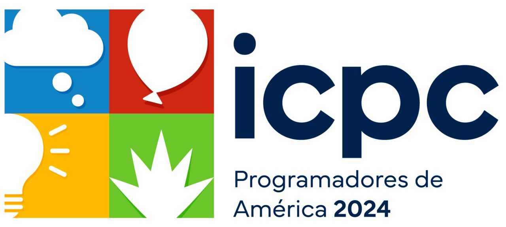
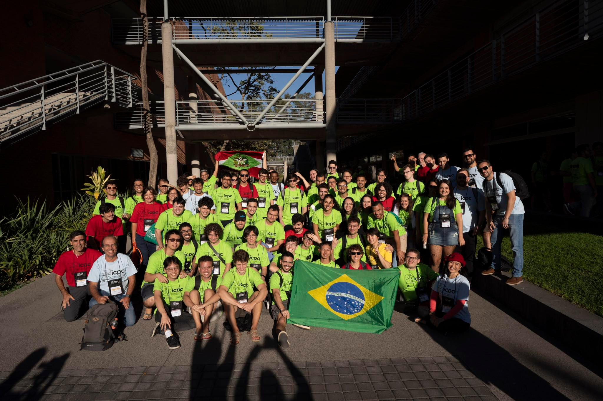

Maratona Edição de 2023

A XXVIII Maratona de Programação que ocorreu no ano de 2023, sendo que a primeira fase ocorreu em 2 de setembro em 44 sedes por todo o Brasil, 4 delas no Centro-Oeste, 5 no Norte, 14 no Sudeste e 7 no Sul. Ao todo, 726 times de 181 instituições de todo o país participaram.
Sobre o evento:
A final brasileira de 2023 foi realizada na bela cidade de Chapecó, em Santa Catarina, com realização da UNOESC: Universidade do Oeste do Estado de Santa Catarina. O Prof. Tiago Zonta foi o diretor da Final. A competição foi patrocinada por Incognia e Stone (diamante), VTex e Concordia Informática (ouro), nstech, oneVC e AMB (prata), e Alura e MeMind (bronze). Contamos ainda com o apoio de diversos parceiros: Instituto Criativo, ALT, Deatec , ACIC, UFFS, Pollen, UnoChapecó e Prefeitura de Chapecó. Além disso, honramos os patrocinadores multiregionais do ICPC na América Latina: Jetbrains e Huawei. Tivemos o prazer de receber na final os Srs. Johhny Yangzhuo e Calvin Ye, representandtes do nosso parceiro Huawei.
A competição ocorre simultaneamente nas 6 regiões latino-americanas. A prova é a mesma, e a equipe de juízes corrige as submissões de forma centralizada.
Neste ano a regional foi classificatória para a Latin American Championship, Programadores de América, que ocorrerá de 14 a 19 de março de 2024 em Guadalajara, Mexico. O Brasil terá 16 representantes em Guadalajara.

Colaboradores:
As seguintes pessoas ajudaram no desenvolvimento do conjunto de problemas criando e aperfeiçoando os enunciados, soluções, casos de teste e checadores das entradas e saídas: Agustín Santiago Gutiérrez, Argentina; Alejandro Strejilevich de Loma, Argentina; Arthur Nascimento, Brasil; Cristhian Bonilha, Brasil; Daniel Bossle, Brasil; Gabriel Poesia, Brasil; Giovanna Kobus, Brasil; Juan Pablo Marin Rosas, México; Marcelo Fornet, Cuba; Mário da Silva, Brasil; Paulo Cezar Pereira Costa, Brasil; Rafael de Assis Cruz, Brasil; Rafael Grandsire, Brasil; Victor Lamarca, Brasil; Vinicius Santos, Brasil; e Welton Cardoso, Brasil.
Problemas e Medalhistas:
Os problemas enfrentados pelos competidores e os detalhes dos processamentos de tentivas de cada equipe podem ser acessados a seguir:
A seguir, você encontrará uma lista dos medalhistas que foram classificados para a Latin American Championship em Guadalajara contando com a Universidade, Nome da Equipe e Integrantes da equipe, respectivamente:
MEDALHAS DE OURO:
MEDALHAS DE PRATA:
MEDALHAS DE BRONZE:
Acesse as ESTATÍSTICAS gerais do evento regional.
ICPC Latin American Finals "Programadores de America"

Entre os dias 14 e 18 de março, aconteceu em Guadalajara, México, a primeira final latino-americana da competição, contando com a participação de 16 equipes brasileiras. O evento foi realizado no belíssimo campus da ITESO, em Guadalajara.
O grande vencedor da competição foi o time "teambrbr002" da UFMG, que solucionou 8 problemas com penalidades e um tempo total de 900 minutos. A equipe da UBA ficou em segundo lugar, também resolvendo 8 problemas, porém com uma penalidade maior (em um minuto).
Veja aqui o Placar Final Programadores da América 2023/24
A Final Mundial do ICPC foi disputada em Astana, Casaquistão de 15 a 20 de setembro de 2024, com a participação de 18 times latino-americanos, dos quais 8 são do Brasil. 
O time da USP foi o melhor entre os brasileiros, resolvendo 6 problemas e obtendo "high honors". Já as equipes da UFRJ, Unicamp, UFMG, UFG e IME solucionaram 5 problemas, alcançando a classificação de "honors". O time da UDESC resolveu 4 problemas e o da USP-São Carlos resolveu 2, ambos recebendo "honorable mention". O time latino-americano mais bem colocado na final mundial foi o da Universidad de Buenos Aires, que solucionou 7 problemas e terminou em 17º lugar, recebendo "highest honors".
.jpg)